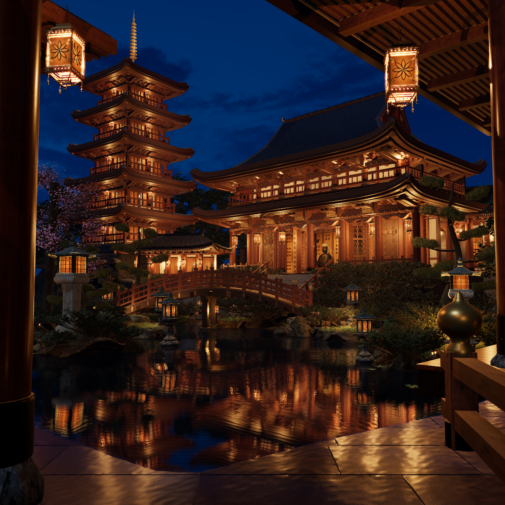
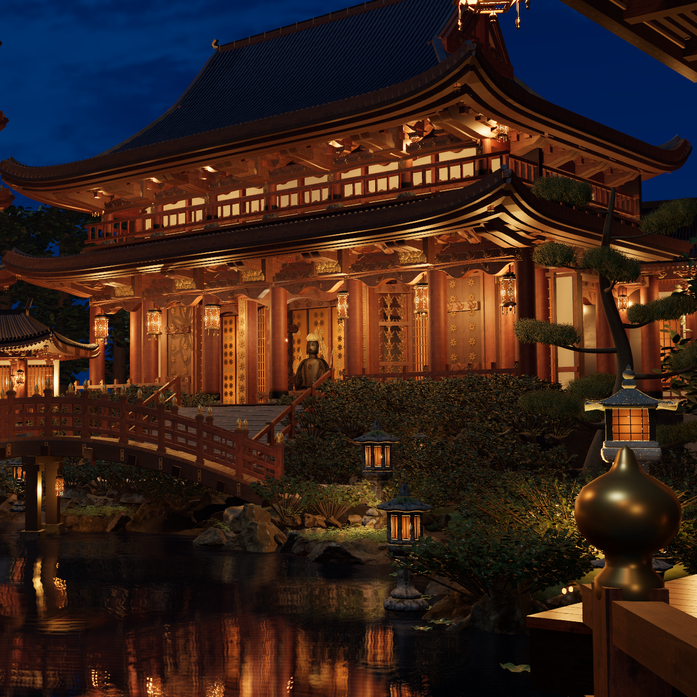
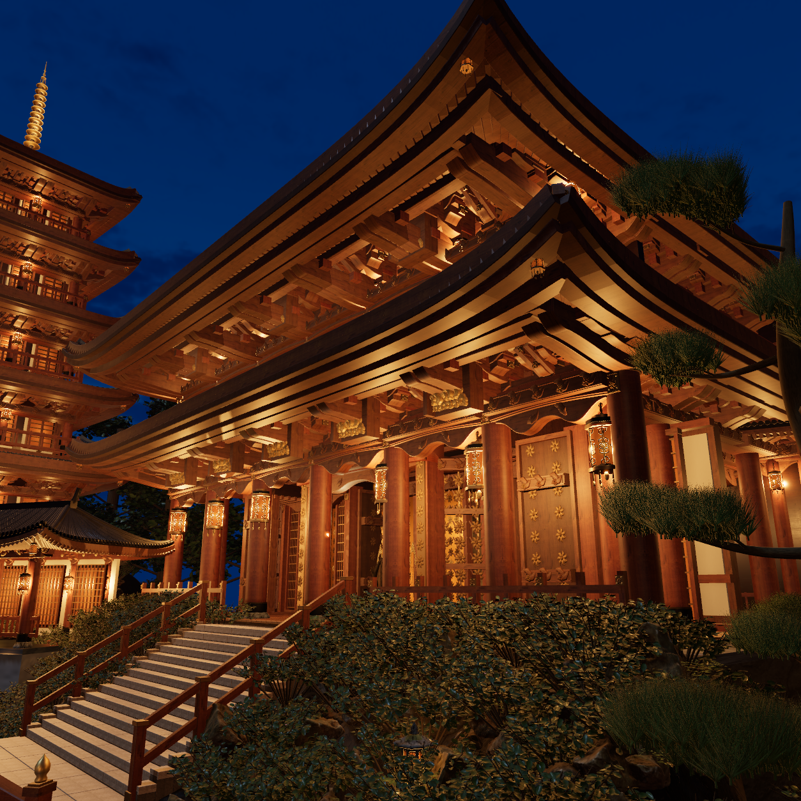
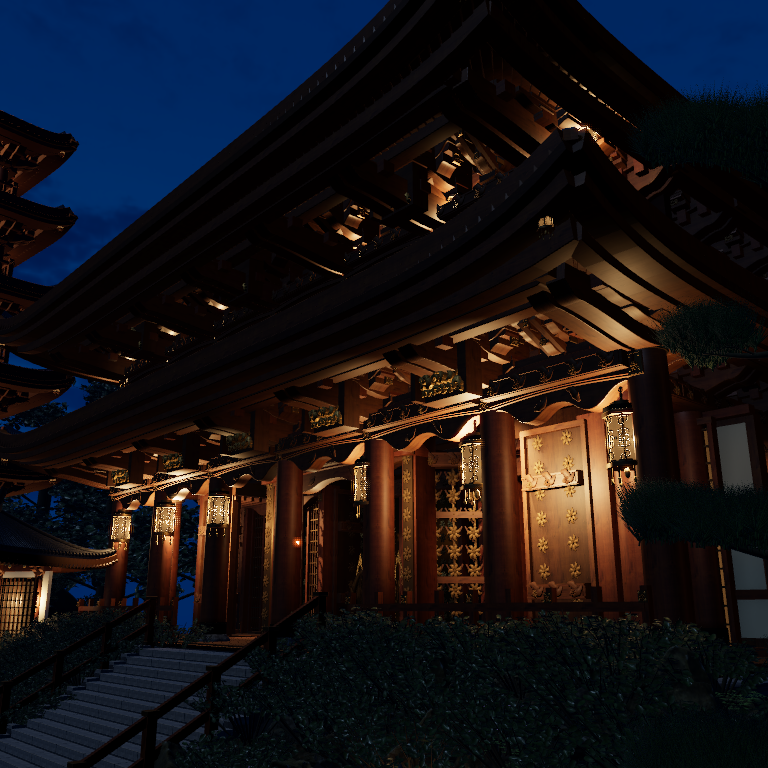
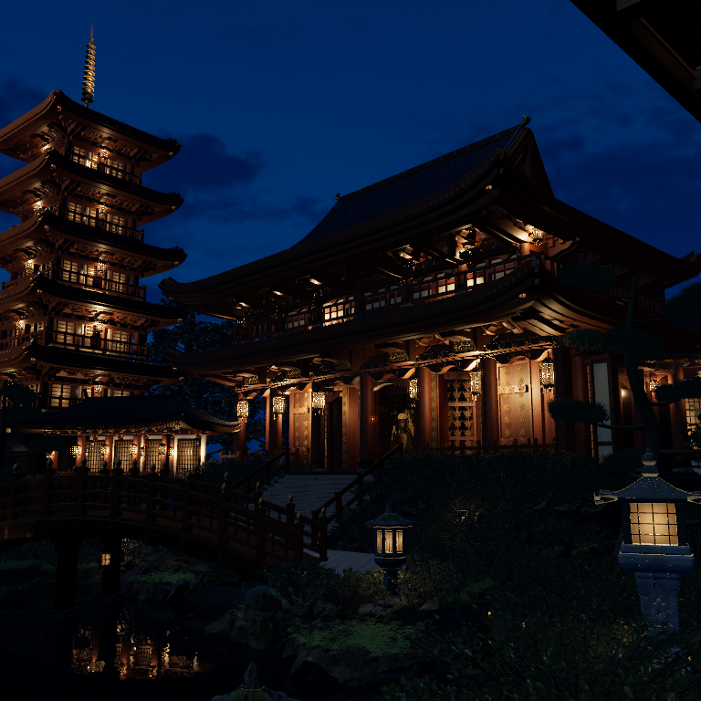
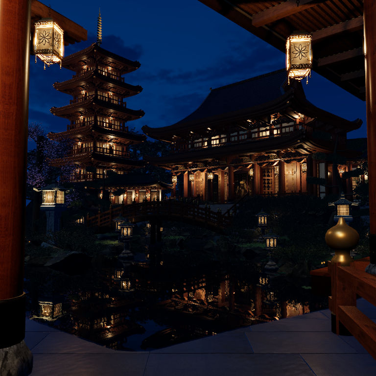

Actual3D lighting/material candidate. Photographic acceptance remains false. Source 6c6b724b86a451773ce7e59f265b7f416963c17523c25b3a4fc03c04f2046974. All images below are the supplied HD photograph or genuine native output; this page adds no repainting, exposure grading or fabricated light.
Bounded modeled-lantern pools, source-fitted hooded fixtures, actual sky/local radiance, source-grain wet granite and genuine pond reflections. The original181 occupied architecture,158 toros, bridge/site/garden and187 camera path remain. Exposure stays0.95. Native technical validity does not establish photo fidelity.





The hero is a separate1254 render of the physical camera's740-source-pixel subfrustum [475,250]. Low3q is [10.8,4.5,7.5] looking at [6.3,10.8,-14], FOV62.



The three poses preserve the exact cameras in the original187 R02 source; this is not a new film.
Photographic fidelity remains unaccepted. The main roof, garden and occupied mass remain darker and less richly bounced than the HD reference, and architecture/ornament/stone/plant specificity is still visibly CG. Fixed local environments, aggregate point exits, PCF shadows and finite spot proxies approximate transport. They are not complete distributed paper-emitter GI or a physical-render equivalence. Smaller upper pagoda cones and secondary fixtures have bounded ranges without geometry shadows. The seven fixture placements, optical response and powers are inferred construction. Granite body values are authored material targets, not surveyed reference reflectance. The three camera-path frames are actual still-pose checks. No new movie, Blender job, scene export or photographic acceptance is claimed.